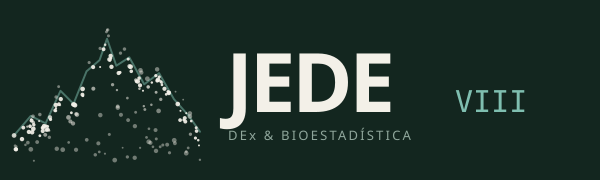

Por confirmar
Plenaria por confirmar
Institución
Aquí irá una breve reseña con las líneas de investigación de la persona ponente.

VIII edición · serie iniciada en Toledo 2010
Un encuentro para que jóvenes investigadoras e investigadores presenten sus trabajos en diseño de experimentos y bioestadística, en un ambiente cercano que favorece el aprendizaje y la colaboración.
El congreso
JEDE reúne cada pocos años a jóvenes investigadoras e investigadores para compartir sus trabajos en diseño de experimentos y bioestadística. El objetivo es fomentar el intercambio de conocimientos y experiencias en un ambiente relajado y receptivo, donde presentar la propia investigación y conocer la de otros grupos puede dar lugar a futuras colaboraciones.
El congreso se enmarca en las actividades de los grupos de trabajo de «Diseño de Experimentos» y «Bioestadística» de la Sociedad de Estadística e Investigación Operativa (SEIO), en colaboración con la Red Nacional de Bioestadística (BIOSTATNET). Esta es la octava edición de una serie que comenzó en Toledo en 2010.
Además de las comunicaciones, el programa incluye conferencias plenarias a cargo de personas expertas de reconocido prestigio, y se conceden premios a las mejores ponencias presentadas por jóvenes investigadores.
Programa
El programa detallado se publicará en cuanto se confirmen las plenarias y se cierre el período de envío de trabajos.
Estamos preparando el programa del congreso. En cuanto esté disponible podrás consultarlo aquí y descargarlo en PDF.
↓ Descargar programa completoEl programa detallado de esta jornada se publicará próximamente.
El programa detallado de esta jornada se publicará próximamente.
El programa detallado de esta jornada se publicará próximamente.
El programa detallado de esta jornada se publicará próximamente.
Conferenciantes plenarios
Personas expertas de reconocido prestigio nacional e internacional abrirán las jornadas con ponencias invitadas. Confirmaremos los nombres próximamente.
Institución
Aquí irá una breve reseña con las líneas de investigación de la persona ponente.
Institución
Aquí irá una breve reseña con las líneas de investigación de la persona ponente.
Institución
Aquí irá una breve reseña con las líneas de investigación de la persona ponente.
Envío de trabajos
Invitamos a jóvenes investigadoras e investigadores a enviar propuestas de comunicación sobre diseño de experimentos, bioestadística y sus aplicaciones. Las propuestas aceptadas se presentarán de forma oral durante las sesiones de comunicaciones.
El formato del resumen, la extensión y la plantilla se publicarán al abrir el período de envío. Las mejores ponencias optarán a los premios del congreso.
Premios
Para promover la investigación de excelencia y la colaboración entre grupos, se concederán premios a las mejores ponencias presentadas por jóvenes investigadores.
Reconocimiento a la comunicación más destacada por su calidad científica y su presentación. Bases y dotación por confirmar.
Segunda distinción entre las ponencias presentadas por jóvenes investigadores. Bases y dotación por confirmar.
Becas
Está previsto ofrecer becas que faciliten la asistencia de estudiantes al congreso. Los detalles de la convocatoria se publicarán próximamente.
Las becas buscan apoyar la participación de estudiantes interesados en el diseño de experimentos y la bioestadística, cubriendo total o parcialmente determinados gastos relacionados con la asistencia.
Cuando se abra la convocatoria, aquí encontrarás los requisitos, los conceptos cubiertos, la documentación necesaria y el plazo de solicitud.
Inscripción
Tarifas orientativas, pendientes de confirmar. Las plazas pueden ser limitadas.
¿Dudas con la inscripción? Escríbenos a organizacion.jede@gmail.com
Quiénes somos
Localización y alojamiento
Sede por confirmar
La dirección exacta y las indicaciones para llegar se publicarán en cuanto se confirme la sede.
Alojamiento: incluiremos aquí una selección de hoteles cercanos con tarifas para asistentes, si las hubiera.
Contacto
Estamos a tu disposición para resolver cualquier duda sobre la inscripción, el programa, el envío de trabajos o las becas.
organizacion.jede@gmail.com